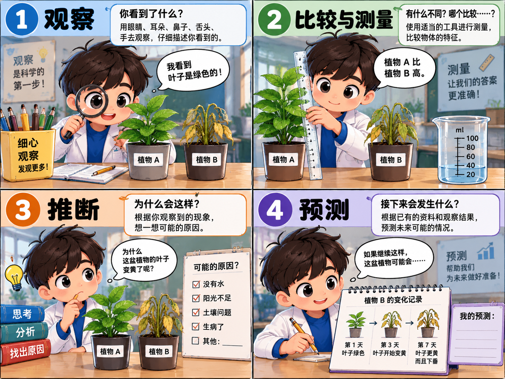

1. 观察
只写真正看到、听到或测量到的现象，不要偷偷加入原因。
答题路线：看见什么 → 写事实。

只写真正看到、听到或测量到的现象，不要偷偷加入原因。
使用适合的工具取得数值，再比较两个对象的差异。
事情已经发生，根据观察到的资料写出合理原因。
根据已有资料判断接下来可能发生的情况。
写实际现象，例如：植物的叶子下垂。
写工具、数值和正确单位，例如：高度是 15 cm。
写合理原因，例如：植物可能缺水。
写接下来可能发生的情况，例如：植物可能继续枯萎。